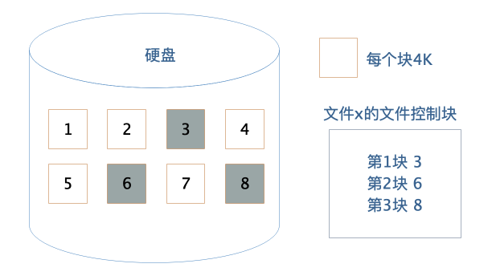
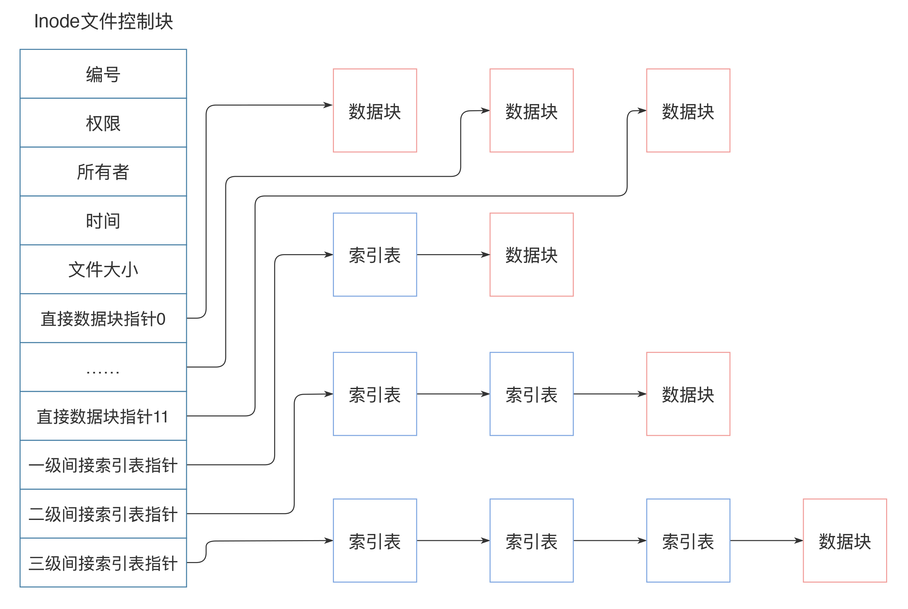
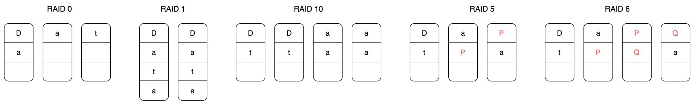
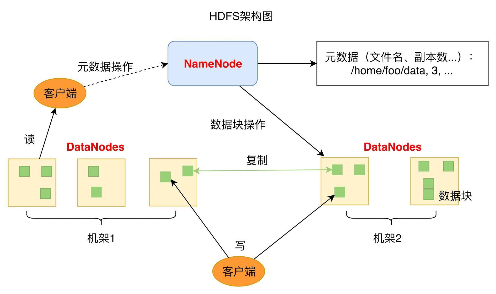

- 00 开篇词 掌握软件开发技术的第一性原理.md
- 01 程序运行原理：程序是如何运行又是如何崩溃的？.md
- 02 数据结构原理：Hash表的时间复杂度为什么是O(1)？.md
- 03 Java虚拟机原理：JVM为什么被称为机器（machine）？.md
- 04 网络编程原理：一个字符的互联网之旅.md
- 05 文件系统原理：如何用1分钟遍历一个100TB的文件？.md
- 06 数据库原理：为什么PrepareStatement性能更好更安全？.md
- 07 答疑 Java Web程序的运行时环境到底是怎样的？.md
- 07 编程语言原理：面向对象编程是编程的终极形态吗？.md
- 08 软件设计的方法论：软件为什么要建模？.md
- 09 软件设计实践：如何使用UML完成一个设计文档？.md
- 10 软件设计的目的：糟糕的程序员比优秀的程序员差在哪里？.md
- 11 软件设计的开闭原则：如何不修改代码却能实现需求变更？.md
- 12 软件设计的依赖倒置原则：如何不依赖代码却可以复用它的功能？.md
- 13 软件设计的里氏替换原则：正方形可以继承长方形吗？.md
- 14 软件设计的单一职责原则：为什么说一个类文件打开最好不要超过一屏？.md
- 15 软件设计的接口隔离原则：如何对类的调用者隐藏类的公有方法？.md
- 16 设计模式基础：不会灵活应用设计模式，你就没有掌握面向对象编程.md
- 17 设计模式应用：编程框架中的设计模式.md
- 18 反应式编程框架设计：如何使程序调用不阻塞等待，立即响应？.md
- 19 组件设计原则：组件的边界在哪里？.md
- 20 答疑 对于设计模式而言，场景到底有多重要？.md
- 20 领域驱动设计：35岁的程序员应该写什么样的代码？.md
- 21 分布式架构：如何应对高并发的用户请求.md
- 22 缓存架构：如何减少不必要的计算？.md
- 23 异步架构：如何避免互相依赖的系统间耦合？.md
- 24 负载均衡架构：如何用10行代码实现一个负载均衡服务？.md
- 25 数据存储架构：如何改善系统的数据存储能力？.md
- 26 搜索引擎架构：如何瞬间完成海量数据检索？.md
- 27 微服务架构：微服务究竟是灵丹还是毒药？.md
- 28 高性能架构：除了代码，你还可以在哪些地方优化性能？.md
- 29 高可用架构：我们为什么感觉不到淘宝应用升级时的停机？.md
- 30 安全性架构：为什么说用户密码泄漏是程序员的锅？.md
- 31 大数据架构：大数据技术架构的思想和原理是什么？.md
- 32 AI与物联网架构：从智能引擎到物联网平台.md
- 33 区块链技术架构：区块链到底能做什么？.md
- 33 答疑 互联网需要解决的技术问题是什么？.md
- 34 技术修炼之道：同样工作十几年，为什么有的人成为大厂架构师，有的人失业？.md
- 35 技术进阶之道：你和这个星球最顶级的程序员差几个等级？.md
- 36 技术落地之道：你真的知道自己要解决的问题是什么吗？.md
- 37 技术沟通之道：如何解决问题？.md
- 38 技术管理之道：你真的要转管理吗？.md
- 38 答疑 工作中的交往和沟通，都有哪些小技巧呢？.md
- 加餐 软件设计文档示例模板.md
- 结束语 期待未来的你，成为优秀的软件架构师.md
05 文件系统原理：如何用1分钟遍历一个100TB的文件？
文件及硬盘管理是计算机操作系统的重要组成部分，让微软走上成功之路的正是微软最早推出的个人电脑PC操作系统，这个操作系统就叫DOS，即Disk Operating System，硬盘操作系统。我们每天使用电脑都离不开硬盘，硬盘既有大小的限制，通常大一点的硬盘也不过几T，又有速度限制，快一点的硬盘也不过每秒几百M。
文件是存储在硬盘上的，文件的读写访问速度必然受到硬盘的物理限制，那么如何才能1分钟完成一个100T大文件的遍历呢？
想要知道这个问题的答案，我们就必须知道文件系统的原理。
做软件开发时，必然要经常和文件系统打交道，而文件系统也是一个软件，了解文件系统的设计原理，可以帮助我们更好地使用文件系统，另外设计文件系统时的各种考量，也对我们自己做软件设计有诸多借鉴意义。
让我们先从硬盘的物理结构说起。
硬盘
硬盘是一种可持久保存、多次读写数据的存储介质。硬盘的形式主要两种，一种是机械式硬盘，一种是固态硬盘。
机械式硬盘的结构，主要包含盘片、主轴、磁头臂，主轴带动盘片高速旋转，当需要读写盘上的数据的时候，磁头臂会移动磁头到盘片所在的磁道上，磁头读取磁道上的数据。读写数据需要移动磁头，这样一个机械的动作，至少需要花费数毫秒的时间，这是机械式硬盘访问延迟的主要原因。
如果一个文件的数据在硬盘上不是连续存储的，比如数据库的B+树文件，那么要读取这个文件，磁头臂就必须来回移动，花费的时间必然很长。如果文件数据是连续存储的，比如日志文件，那么磁头臂就可以较少移动，相比离散存储的同样大小的文件，连续存储的文件的读写速度要快得多。
机械式硬盘的数据就存储在具有磁性特质的盘片上，因此这种硬盘也被称为磁盘，而固态硬盘则没有这种磁性特质的存储介质，也没有电机驱动的机械式结构。
其中主控芯片处理端口输入的指令和数据，然后控制闪存颗粒进行数据读写。由于固态硬盘没有了机械式硬盘的电机驱动磁头臂进行机械式物理移动的环节，而是完全的电子操作，因此固态硬盘的访问速度远快于机械式硬盘。
但是，到目前为止固态硬盘的成本还是明显高于机械式硬盘，因此在生产环境中，最主要的存储介质依然是机械式硬盘。如果一个场景对数据访问速度、存储容量、成本都有较高要求，那么可以采用固态硬盘和机械式硬盘混合部署的方式，即在一台服务器上既有固态硬盘，也有机械式硬盘，以满足不同文件类型的存储需求，比如日志文件存储在机械式硬盘上，而系统文件和随机读写的文件存储在固态硬盘上。
文件系统
作为应用程序开发者，我们不需要直接操作硬盘，而是通过操作系统，以文件的方式对硬盘上的数据进行读写访问。文件系统将硬盘空间以块为单位进行划分，每个文件占据若干个块，然后再通过一个文件控制块FCB记录每个文件占据的硬盘数据块。

这个文件控制块在Linux操作系统中就是inode，要想访问文件，就必须获得文件的inode信息，在inode中查找文件数据块索引表，根据索引中记录的硬盘地址信息访问硬盘，读写数据。inode中记录着文件权限、所有者、修改时间和文件大小等文件属性信息，以及文件数据块硬盘地址索引。inode是固定结构的，能够记录的硬盘地址索引数也是固定的，只有15个索引。其中前12个索引直接记录数据块地址，第13个索引记录索引地址，也就是说，索引块指向的硬盘数据块并不直接记录文件数据，而是记录文件数据块的索引表，每个索引表可以记录256个索引；第14个索引记录二级索引地址，第15个索引记录三级索引地址，如下图：

这样，每个inode最多可以存储12+256+256*256+256*256*256个数据块，如果每个数据块的大小为4k，也就是单个文件最大不超过70G，而且即使可以扩大数据块大小，文件大小也要受单个硬盘容量的限制。这样的话，对于我们开头提出的一分钟完成100T大文件的遍历，Linux文件系统是无法完成的。那么，有没有更给力的解决方案呢？
RAID
RAID，即独立硬盘冗余阵列，将多块硬盘通过硬件RAID卡或者软件RAID的方案管理起来，使其共同对外提供服务。RAID的核心思路其实是利用文件系统将数据写入硬盘中不同数据块的特性，将多块硬盘上的空闲空间看做一个整体，进行数据写入，也就是说，一个文件的多个数据块可能写入多个硬盘。
根据硬盘组织和使用方式不同，常用RAID有五种，分别是RAID 0、RAID 1、RAID 10、RAID 5和RAID 6。

RAID 0将一个文件的数据分成N片，同时向N个硬盘写入，这样单个文件可以存储在N个硬盘上，文件容量可以扩大N倍，（理论上）读写速度也可以扩大N倍。但是使用RAID 0的最大问题是文件数据分散在N块硬盘上，任何一块硬盘损坏，就会导致数据不完整，整个文件系统全部损坏，文件的可用性极大地降低了。RAID 1则是利用两块硬盘进行数据备份，文件同时向两块硬盘写入，这样任何一块硬盘损坏都不会出现文件数据丢失的情况，文件的可用性得到提升。
RAID 10结合RAID 0和RAID 1，将多块硬盘进行两两分组，文件数据分成N片，每个分组写入一片，每个分组内的两块硬盘再进行数据备份。这样既扩大了文件的容量，又提高了文件的可用性。但是这种方式硬盘的利用率只有50%，有一半的硬盘被用来做数据备份。
RAID 5针对RAID 10硬盘浪费的情况，将数据分成N-1片，再利用这N-1片数据进行位运算，计算一片校验数据，然后将这N片数据写入N个硬盘。这样任何一块硬盘损坏，都可以利用校验片的数据和其他数据进行计算得到这片丢失的数据，而硬盘的利用率也提高到N-1/N。
RAID 5可以解决一块硬盘损坏后文件不可用的问题，那么如果两块文件损坏？RAID 6的解决方案是，用两种位运算校验算法计算两片校验数据，这样两块硬盘损坏还是可以计算得到丢失的数据片。
实践中，使用最多的是RAID 5，数据被分成N-1片并发写入N-1块硬盘，这样既可以得到较好的硬盘利用率，也能得到很好的读写速度，同时还能保证较好的数据可用性。使用RAID 5的文件系统比简单的文件系统文件容量和读写速度都提高了N-1倍，但是一台服务器上能插入的硬盘数量是有限的，通常是8块，也就是文件读写速度和存储容量提高了7倍，这远远达不到1分钟完成100T文件的遍历要求。
那么，有没有更给力的解决方案呢？
分布式文件系统
我们再回过头看下Linux的文件系统：文件的基本信息，也就是文件元信息记录在文件控制块inode中，文件的数据记录在硬盘的数据块中，inode通过索引记录数据块的地址，读写文件的时候，查询inode中的索引记录得到数据块的硬盘地址，然后访问数据。
如果将数据块的地址改成分布式服务器的地址呢？也就是查询得到的数据块地址不只是本机的硬盘地址，还可以是其他服务器的地址，那么文件的存储容量就将是整个分布式服务器集群的硬盘容量，这样还可以在不同的服务器上同时并行读取文件的数据块，文件访问速度也将极大的加快。
这样的文件系统就是分布式文件系统，分布式文件系统的思路其实和RAID是一脉相承的，就是将数据分成很多片，同时向N台服务器上进行数据写入。针对一片数据丢失就导致整个文件损坏的情况，分布式文件系统也是采用数据备份的方式，将多个备份数据片写入多个服务器，以保证文件的可用性。当然，也可以采用RAID 5的方式通过计算校验数据片的方式提高文件可用性。
我们以Hadoop分布式文件系统HDFS为例，看下分布式文件系统的具体架构设计。

HDFS的关键组件有两个，一个是DataNode，一个是NameNode。DataNode负责文件数据的存储和读写操作，HDFS将文件数据分割成若干数据块（Block），每个DataNode存储一部分数据块，这样文件就分布存储在整个HDFS服务器集群中。应用程序客户端（Client）可以并行对这些数据块进行访问，从而使得HDFS可以在服务器集群规模上实现数据并行访问，极大地提高了访问速度。在实践中，HDFS集群的DataNode服务器会有很多台，一般在几百台到几千台这样的规模，每台服务器配有数块硬盘，整个集群的存储容量大概在几PB到数百PB。
NameNode负责整个分布式文件系统的元数据（MetaData）管理，也就是文件路径名、访问权限、数据块的ID以及存储位置等信息，相当于Linux系统中inode的角色。HDFS为了保证数据的高可用，会将一个数据块复制为多份（缺省情况为3份），并将多份相同的数据块存储在不同的服务器上，甚至不同的机架上。这样当有硬盘损坏，或者某个DataNode服务器宕机，甚至某个交换机宕机，导致其存储的数据块不能访问的时候，客户端会查找其备份的数据块进行访问。
有了HDFS，可以实现单一文件存储几百T的数据，再配合大数据计算框架MapReduce或者Spark，可以对这个文件的数据块进行并发计算。也可以使用Impala这样的SQL引擎对这个文件进行结构化查询，在数千台服务器上并发遍历100T的数据，1分钟都是绰绰有余的。
小结
文件系统从简单操作系统文件，到RAID，再到分布式文件系统，其设计思路其实是具有统一性的。这种统一性一方面体现在文件数据如何管理，也就是如何通过文件控制块管理文件的数据，这个文件控制块在Linux系统中就是inode，在HDFS中就是NameNode。
另一方面体现在如何利用更多的硬盘实现越来越大的文件存储需求和越来越快的读写速度需求，也就是将数据分片后同时写入多块硬盘。单服务器我们可以通过RAID来实现，多服务器则可以将这些服务器组成一个文件系统集群，共同对外提供文件服务，这时候，数千台服务器的数万块硬盘以单一存储资源的方式对文件使用者提供服务，也就是一个文件可以存储数百T的数据，并在一分钟完成这样一个大文件的遍历。
思考题
在RAID 5的示意图中，P表示校验位数据，我们看到P不是单独存储在一块硬盘上，而是分散在不同的盘上，实际上，校验数据P的存储位置是螺旋式地落在所有硬盘上的，为什么要这样设计？
欢迎你在评论区写下你的思考，也欢迎把这篇文章分享给你的朋友或者同事，一起交流一下。
© 2019 - 2023 Liangliang Lee. Powered by gin and hexo-theme-book.